RuneScape 3 · Grand Exchange Market Intelligence
Track prices, spot opportunities, manage your portfolio, and get a feel for the market — all in one place.
Track prices, spot opportunities, manage your portfolio, and get a feel for the market — all in one place.
GEnius pulls live Grand Exchange data and turns it into something you can actually act on.
Real-time buy/sell prices with per-price freshness timestamps, refreshed every 15 minutes, across 7,000+ tradeable items.
Automatic flags for surges, dumps, volume frenzies, suspected manipulation, and listed-price/live-price discrepancies.
Search any monster for its drop table, an estimated gp/kill, and combat stats — straight from the wiki, including Normal/Hard mode splits.
Log real positions, track unrealised P&L, GE tax handled automatically, and see your full closed-trade history.
Star items to watch, and set alerts on price thresholds, percent moves, or specific market signals — with optional Discord notifications.
7-day through all-time views, seasonal weekly averages, all-time high/low markers, and a date lookup for any historical price.
Instant search-as-you-type across the entire catalogue, with 40+ built-in community shorthands (FSOA, AGS, EOF...) and your own custom ones.
Every item gets a 0–100 score from momentum, volume behaviour, active signals, and alch profitability — sortable at a glance.
Historical DXP-event intelligence — see how items have actually moved across past Double XP Weekends, with buy/sell timing suggestions.
Real screens, straight from the app.
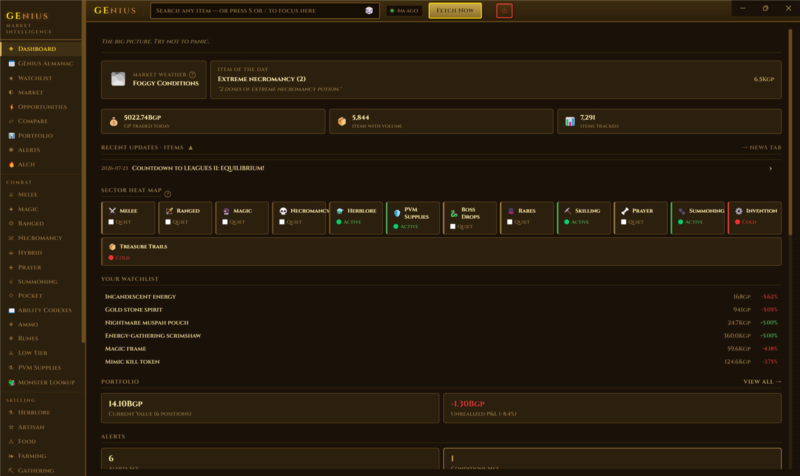
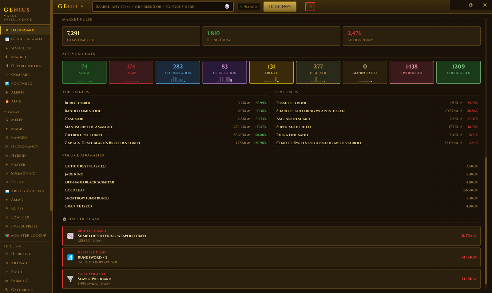
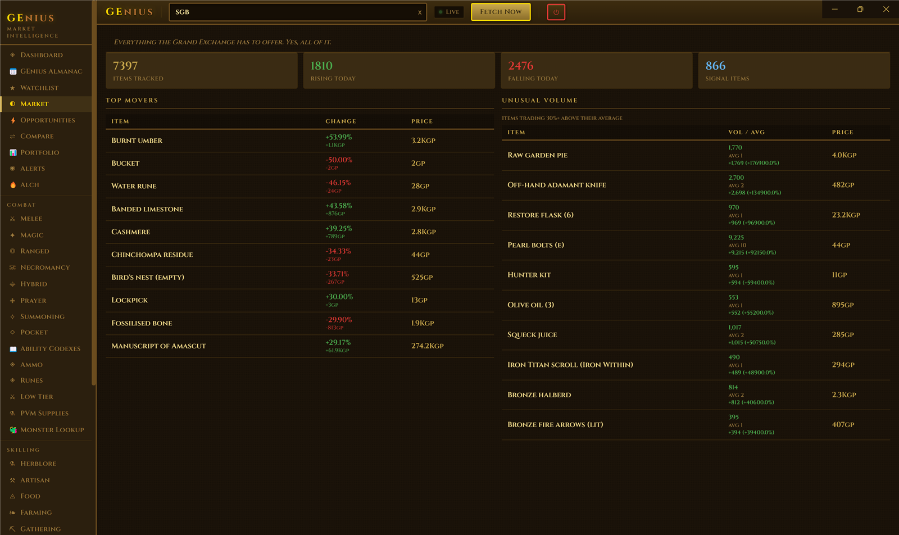
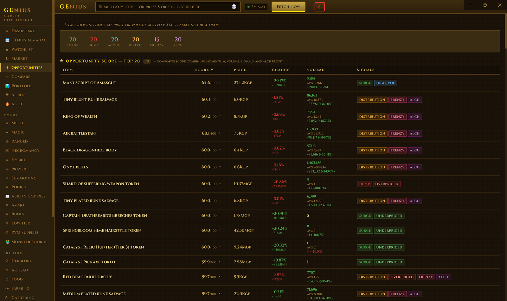
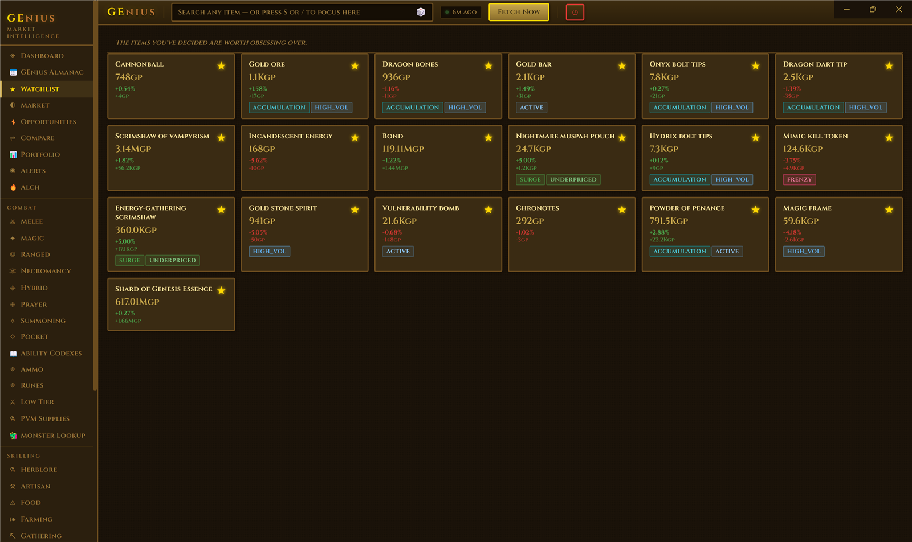
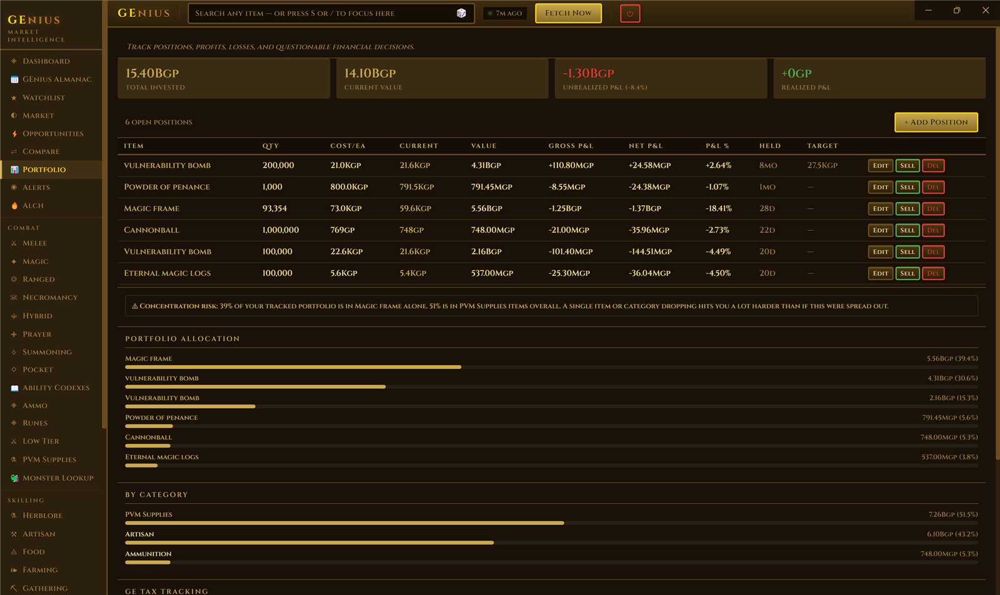
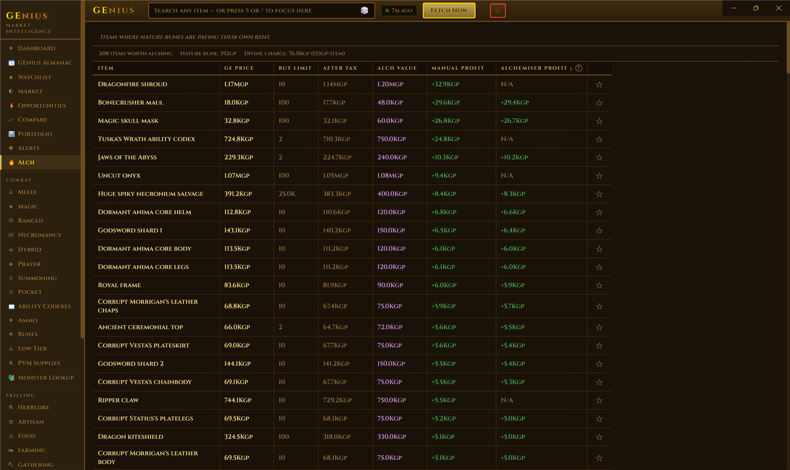
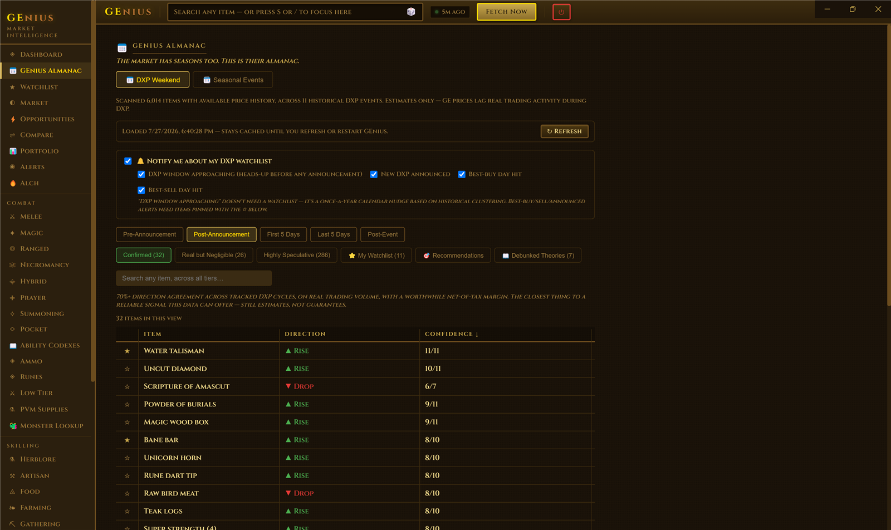
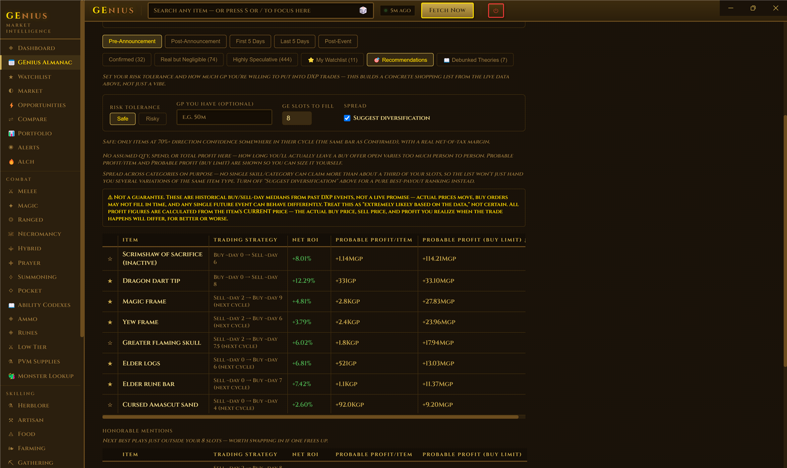
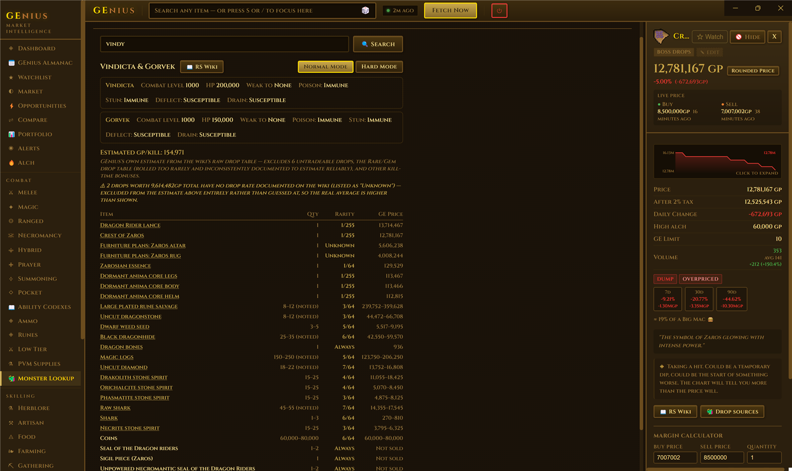
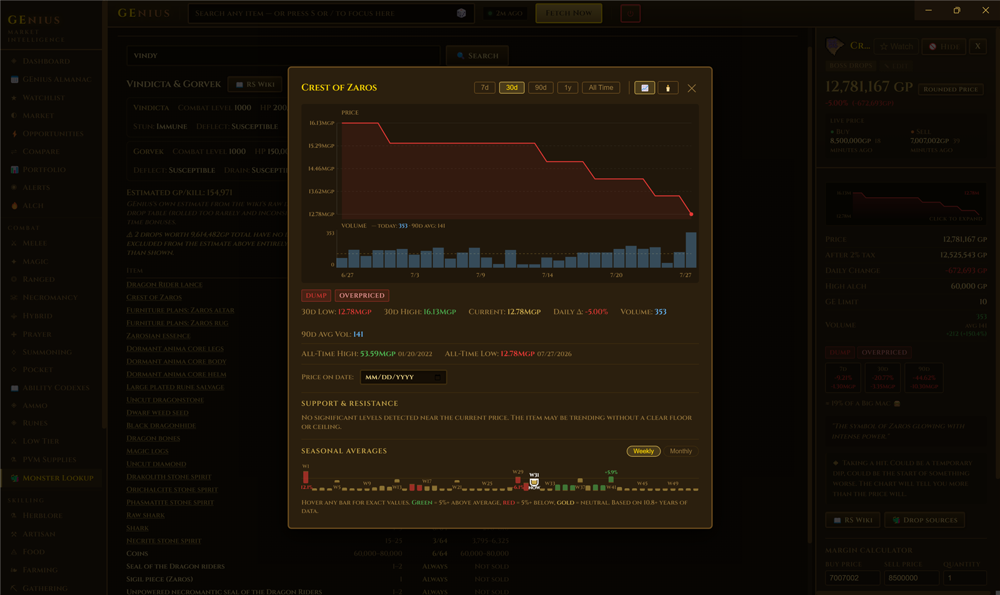
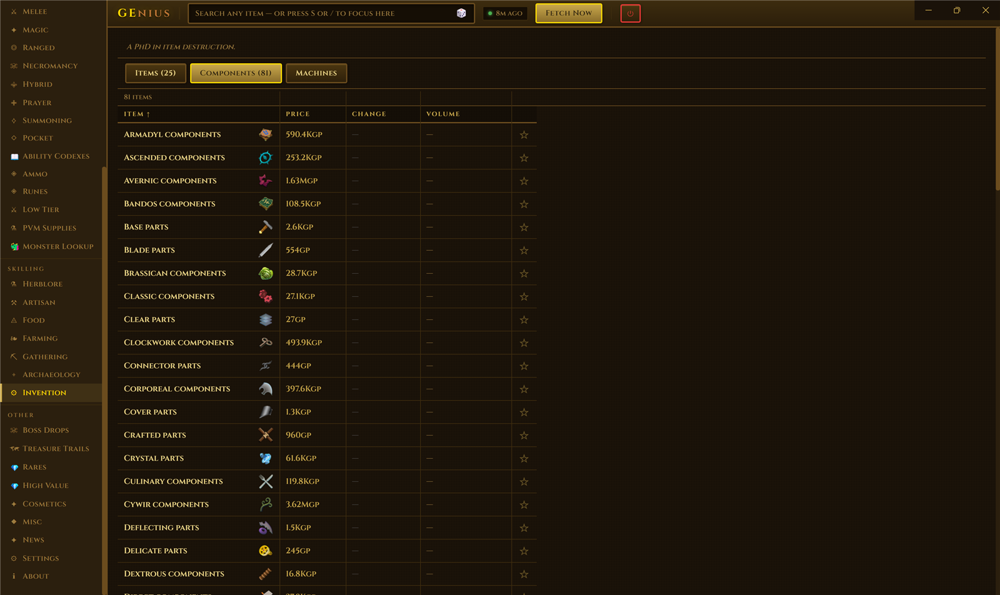
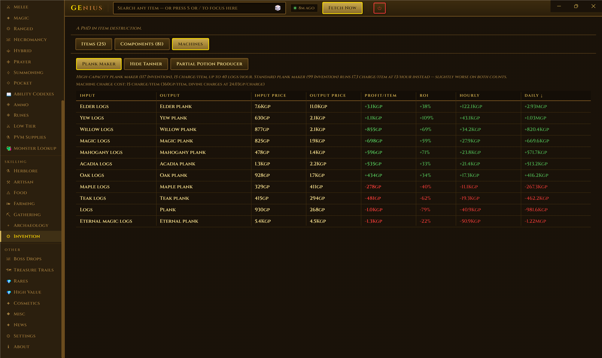
No account. No subscription. No server GEnius talks to besides public price data.
Download the latest GEnius Setup x.x.x.exe from the button above, or the Releases page.
Run the installer. Windows may show a SmartScreen warning since the app isn't code-signed — click "More info" → "Run anyway."
Launch GEnius. On first run it fetches current prices and starts building historical data in the background — this can take 10+ minutes for the full catalogue, but the app is usable while it finishes.
That's it. Prices refresh automatically every 15 minutes after that.